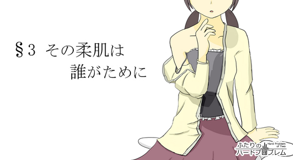

慌てふためく声が曇天の下に響いた。
「だ、ダメです希海さん！ 離さないでください！」
季節は秋。10月もあと数えるほどになったころ。あんなに暑かった夏が過ぎ去り昼間でも長袖が欠かせなくなって、そろそろ木々が赤く色づき出し始めようかというそんな季節。
「大丈夫だって。何かあったらすぐ支えるから」
「大丈夫じゃありませんよ！ こけちゃいますって！」
おっかなびっくりな様子でペダルを漕ぐリコの自転車を、希海は両手を伸ばして支える。軽量素材が使われているとはいえ、ロボットであるリコは人間よりかなり重い。荷台を掴む希海の手には尋常じゃないほど力が込められており、そろそろ腕が疲れてきたのでいい加減に休みたいというのが正直なところだった。
「いいからいいから。ほら離すわよーっ！」
希海が荷台を支える手を離すと悲鳴がいっそう大きくなった。リコの乗った自転車は、三輪車かと見紛うばかりのスピードでふらふらと蛇行をはじめる。周囲には人影がちらほらといたが、ここ解放記念公園のグラウンドは広大なので誰かとぶつかってしまう心配もない。周辺の施設といえば解放軍の駐屯地と労働党の真浜支部くらいであって、平日のこの時間帯にはほとんど人がいないのだ。希海の大学が近いのが唯一の懸念事項であるが、頭上はこの曇天。いつ一雨来てもおかしくないこの天気なら、いつぞやみたいに知り合いにばったりと出くわすこともないだろう。そう安心できるほどに、希海たちの周囲には人がいなかった。
「おおーっ。なかなかいい感じよ。その調子その調子！」
おぼつかない様子で自転車のハンドルを右へ左へと動かす少女の姿を微笑ましく見守る希海。ふたりが今日、ここへやってきたのは他でもない、新しく買った自転車の練習のためだ。今までは買い物だろうが何だろうが徒歩で済ませてきた希海だったが、最近は何から何までリコにまかせっきりである。自分が何もしていない申し訳なさも手伝って、少しでも日々の雑務が楽になるようにとつい先日、リコに自転車を買ってやったのだ。
リコの乗った自転車が危なっかしく方向を変えた。練習を始めてから今日で5日目。相変わらずきゃあきゃあとうるさいが、最初こそ自転車にまたがることすら怖がっていたが徐々に自転車に慣れ始めているようである。希海はしばらくリコを見守った後、タバコをくわえて火を付けると、その場に腰を降ろした。
「私も、そろそろ頑張らないとな……」
つぶやいた言葉は、湿った風に流されてどこかへと消えてしまう。
もう時間がないというのに、希海には自分が大学へ行く姿がまったく想像できなかった。ぬるま湯のような弛緩した日常に思考力を奪われているのだろう。希海の大学では2回連続での留年は認められていないのだ。すでに1年間を無為に過ごしてしまった希海に残された時間はあと半年。卒業か退学か。泣いても笑っても半年後には現実を突きつけられる羽目になるというのに、今の希海にはどうしてもその実感が持てずにいた。
タバコの煙が渦を巻いて空へと吸い込まれていく。紫煙が立ち昇る先にあるのは一面灰色の雲。白でも黒でも、快晴でも雨天でもない。何もかもを先送りにしつづけている希海の現状そのものだった。
「あ」
遠くでガシャンという音。少し目を離した間にリコが転倒してしまっていた。希海はタバコを携帯灰皿にねじ込むと、慌てて自転車のそばへと駆け寄る。よほど変なこけ方をしたのか、リコは自転車の下敷きになってしまっていた。
「大丈夫？」
「だ、だから離さないでって言ったんですよぉ……」
のそのそと起き上がり希海を恨めしそうに睨むリコ。見たところ怪我はないようだったが、紺のジャンパースカートは土埃で真っ白に汚れてしまっており、その瞳にはうっすらと涙が浮かんでいた。
「あはは……。ごめんごめん」
自転車のスタンドを立て、服に着いた土を払ってやろうとしたそのとき。鼻柱に冷たいものが触れた。
「あ……」
湿った風が希海の髪を持ち上げる。
ついにきたか。恨めしそうな視線で見上げた曇天。そんな希海の頬に、さらに一滴、二滴と雫が落ちてくる。
「雨……ですか？」
「そうみたい。そろそろ引き上げよっか」
リコが不安そうに見つめてくるが、希海は慌てない。雨が降ることはもとより織り込み済みだ。つい先程立てたばかりのスタンドを蹴って外し、颯爽と自転車にまたがる。サドルが少し低い気がするが、この場合むしろ好都合。希海はブレーキレバーを握って感触を確かめると、得意げな顔でリコを振り返る。
「じゃあ後ろ乗って」
リコが固まった。
「え……。えっと、後ろっていうのは……」
「何言ってんのよ。荷台に決まってんじゃない。さっさと帰らないと本格的に降ってくるわよ。台風近づいてるらしいし」
希海は視線で自転車の荷台を指して促すが、リコは微動だにしない。どうやら先程派手に転んでしまったことがあってか、ふたり乗りに恐怖感を抱いているようだった。希海があれこれ説得しても、リコ一向に首を縦に振ろうとはせず、雨粒がその大きさを増していき無視できないほどになっても、まだリコは自転車の後ろに乗ることを承諾しようとはしなかった。
そして希海が折れた。
折れたというより、悠長に話をしていたら雨が本格的に降りだしてしまい、リコを説得する理由がなくなってしまったという方が正しいのだが。
「か、帰ってこれた……」
「の、希海さん。も、もう少し奥に行ってください……」
ずぶ濡れの状態で玄関を開けた希海は、靴紐もほどかずにその場に屈みこんだ。たっぷりと水を吸ったシャツが体に貼り付き、前髪からしたたる雨水が一滴また一滴とポーチタイルを濡らしていく。
「台風舐めてたわ」
水滴が床を黒く染めていく様子を見つめながら、独り言をこぼす希海。雨も風も、まさかあんなに強くなるなんて思いもよらなかった。自転車を押して帰る決意をしたときは、ちょっと濡れる程度で済むと思っていたのに。希海は自分の見通しの甘さを後悔する。
そして見通しが甘かったのは雨足についてだけではない。リコの足についてもだ。記念公園からここまで、希海は自転車を押しながら走ってきたのだが、リコの走る速度はなんとその希海よりも遅かったのである。
時々刻々と強さを増していく台風は、そんなリコとリコに歩調を合わせる希海を待ってはくれなかった。記念公園を出たときには顔や手が少し濡れる程度だった雨は、家に帰る頃になると横殴りの土砂降りに変貌していた。
「の、希海さん……聞いてます？ と、扉が閉められないですからどいてください」
「無理」
「ど、どかないなら、希海さんの上乗り越えちゃいますよ……。ひ、膝とか当たっても知りませんからね。やぁ！」
「あいたっ！」
リコの膝が希海の肩を強打した。
希海はリコに押しつぶされる形で、リコは希海に足を取られる形で、ふたりは折り重なって床に倒れこむ。雨で体が冷えているせいだろう。背中に感じるリコの体温が妙に生々しかった。
「わっ。だ、大丈夫ですか」
耳元で聞こえるリコの声。頬に吐息がかかる。
その姿を目で見ても、その知能を会話で測ってみても、こうして肌を重ねてその温もりを感じてみても、リコの存在は人間そのものだ。
「希海さん、希海さんってば」
ふと、ある疑問が希海の脳裏をよぎった。この子は本当にロボットなのだろうか。ひょっとするとこの子は実は人間で、何かの間違いでロボットとして扱われているんじゃないだろうか。
馬鹿げた話だ。希海は自らの考えを否定する。
リコがロボットでないというのなら、東の話はどうなる。あのとき東から聞いた話は全部嘘だったとでも言うのか。そもそもリコは食事を採らないでも毎日ピンピンしているし、代謝がないから体を洗わずとも別段臭いもなにもしないではないか。どこをどう取ってもリコがロボットであることに間違いはないのに、こうして彼女の体温や息遣いを感じていると、どうしてもその実感が持てない。
「希海さん！ あ、ひょっとして怒ってます？ でも希海さんが悪いんですよ。だって……ひゃっ！」
いっそう強い風が吹き、アパートの廊下が揺れた。横殴りの雨が開いたままの玄関をくぐり抜け、追い銭だと言わんばかりに希海とリコに降り注ぐ。
「リコ」
「はい」
「お風呂入る」
こんなこともあろうかと、希海は家を出る前に風呂を沸かしていた。元々は公園で遊んだ汗を流すためであって、まさか汗どころか雨でずぶ濡れになるとは思いもよらなかったが、その話は置いておこう。
風呂場へと向かった希海は、濡れたシャツを乱暴に脱ぎ捨てる。布地が体に貼り付き時間がかかってしまったが、ブラジャーを外し洗濯カゴにパンツを放り投げる頃には、ちょうど良い具合にエアコンが効きはじめてきた。
（ああもう）
今日は散々だった。洗面台の上の切れかけた蛍光灯を眺めながら希海は思う。せっかく今までいい感じで練習が進んでいたというのに、今日の一件でリコが自転車から遠ざかってしまったらどうしよう。リコが自転車に乗れるようになった暁には、ふたりでどこか遠くへサイクリングにでも行こうと考えていたのだが、この調子だとそれは随分と先の話になりそうである。
おまけにこの雨。
頭のてっぺんからつま先まで、まるで川にでも落ちたかのようにずぶ濡れである。サイフに入れていた紙幣やらカードの類は雨水を吸ってひたひたになっているばかりか、ポケットの一番深いところに入れていた携帯端末まで水浸しである。
（まあでも……）
だがその一方で、雨天のトラブルを楽しんでいた自分がいたことも確かだ。あんな暴風雨の中を歩いたのはいつぶりだろう。はじめこそ濡れることに抵抗があったものの、下着まで水が染み込んでくる段になると、そんな考えはどこかへ消えてしまっていた。痛いほどの勢いで顔に叩きつけられる雨が新鮮だった。雨がかからないように、濡れないようにと必死に傘を構える人を見ては、勝ち誇ったような気分になれた。歩くたびにぐしゅぐしゅと水音を立てるスニーカーがこそばゆかった。芯の火照った体を冷やす雨が心地良かった。リコの手を引っ張って歩くのが楽しかった。不安そうにつないだ手を握り返してくれるのが嬉しかった。
「希海さん、まだですか？」
引き戸の向こうからリコの声がした。
そうだ、と希海は我に返る。希海が風呂に飛び込んだ後に、リコが服を着替えることになっているのだ。思うことが色々あったせいで、裸になったそのままの姿勢でぼうっとしてしまっていた。
「あ、ごめん、今入る」
そう言って浴室のドアを開ける希海。
（ん……？ そう言えば明日って）
ノブに掛けた手が途中で止まった。
数秒の間、そのままの姿勢で考え事をする。そして希海は、浴室に入らずにそのまま扉を閉めた。ふと、洗面台に備え付けられた鏡が目に入る。そこに写っていたのは落ち着きのないにやけた表情――、悪巧みを考えついた子供にそっくりである。
「希海さん、入りましたー？ 開けますよー……ってわああっ！」
「ハロー」
希海は全裸のまま、にっこりと右手を上げた。遠い宇宙のどこかにいる異星人へと向けられた人類からのメッセージ、そんな絵面である。
「ま、まだ入ってなかったんですかっ！？ は、早く入ってください！」
「なによー。リコだって、いつか素っ裸で私の前に現れてくれたじゃない。忘れた？ ほら、最初に部屋に来たとき」
「あ、あれは仕方なく……ていうかちゃんと前隠してましたよ！」
引き戸を閉じて退散しようとするリコ。だが希海はそれよりも早く、さっと手を伸ばしてリコの手首を掴んだ。
「ちょ、ちょっと希海さん！」
「せっかくだし、一緒に入ろ。ね？」
湯船に浸かると、全身の筋肉がほぐれていくのを感じた。希海は両肘を浴槽の淵に置いて大きく足を伸ばし、意味もなくタオルを頭に乗せてみる。
「あー。やっぱ風呂は最高ねえ。リコもそう思わない？」
「わ、私はほとんど入らないので」
シャワーチェアに座ったリコは、タオルで前を隠しながら恥ずかしそうに浴室の隅に視線を落としている。
「まあでも、今日はしっかりと洗っとかいないとね。覚えてる？ 明日は定期メンテの日。色々と汚れてたらリコだって恥ずかしいでしょ」
「私は人間と違って、お風呂に入らなくても汚れませんよ」
「派手にこけたし、その後雨に濡れたじゃない。そのまま乾かすと雑菌が繁殖してくさ〜くなっちゃうわよ、多分」
「わ、分かりました。洗います。洗いますけど……」
リコは伏目がちにちらりと横を伺う。その視線の先には両の肘を湯船の縁に乗せた希海の姿があった。
「あんまり見られると恥ずかしいです」
「なんでよ。いいじゃない別に。女同士なんだし」
「そ、そういう問題じゃありません」
「じゃあどういう問題なのよ」
「そ、それは……」
「よし、じゃあこうしよう！」
返答を待たずして、希海はおもむろに立ち上がった。ざぶん、という大きな水音と、雫が水面を叩くいくつもの音が浴室に鈍く反響する。
「の、希海さん！ いろいろ隠してください！」
目を逸らすリコのことなど、つゆぞ知らぬと言わんばかりの様子である。希海は浴槽をまたぎ、リコの方へ歩み寄ると小さな肩に手を回す。
「えへへー。じゃあさ、じゃあさ」
「は、はい……」
「私が洗ってあげるわよッ！」
「ちょ、ちょっと待ってください希海さん！ 意味が分からないです！」
「はい、そういうわけでタオルかしてねー！」
リコからタオルを奪い取った。布切れによってかろうじて隠されていた小さなふくらみがあらわになる。
「あらー。綺麗な体ねえ」
わざとらしく両手を頬にあて、満面の笑みを浮かべてみる。希海はノリノリだった。人前では猫を被っているが、生来こういう悪ふざけは大好きな性格である。いや、普段から抑えているからこそ、こういうふとしたはずみで暴走が始まるのかもしれない。
「の、希海さん。きょ、今日は何だか怖いです……」
「そんなことないわよー。私はいつだってーリコのことを想ってるんだからー」
「な、なんで棒読みなんですか」
「なるほど。やっぱり愛は体で確かめないといけないってことね」
「……は？」
「というわけで……」
肩に乗せていた希海の手がゆっくりと、艶めかしい動きで太ももに回る。リコの顔が恐怖で引きつった。
「あ……あの。の、希海さん……？」
「おらーっ！ 股開けやーっ！」
「いやあああっ！」
希海は高らかに叫び、手に力を加える。
そのまま嫌がるリコの足を強引に開け、そして――